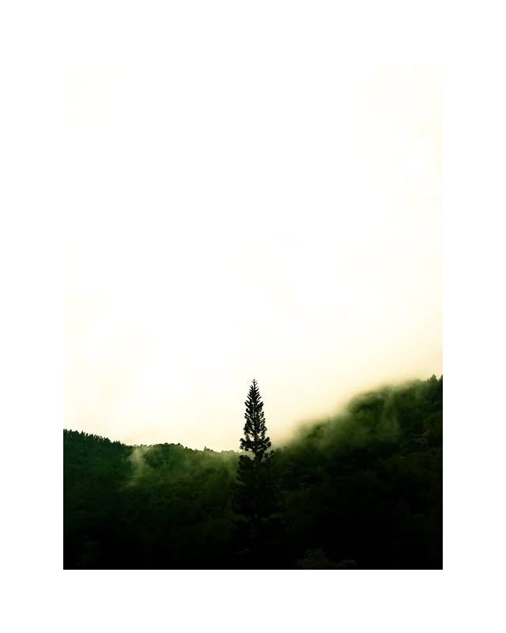
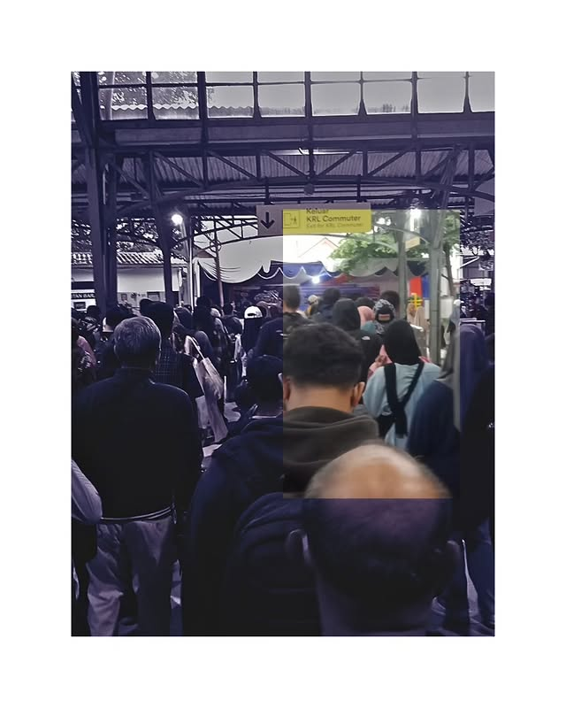

Galeri Foto



.jpg)
.jpg)
.jpg)
.jpg)
.jpg)
.jpg)
Menangkap momen, menceritakan kisah.
Saya adalah seorang fotografer yang hingga kini masih setia menggunakan handphone sebagai perangkat utama dalam berkarya. Di tengah era teknologi yang semakin maju dengan hadirnya kamera-kamera profesional yang canggih, saya justru menemukan kebebasan dan keunikan tersendiri saat memotret hanya dengan gawai yang selalu ada di genggaman saya. Bagi saya, fotografi bukan sekadar tentang alat yang mahal, melainkan tentang bagaimana saya mampu menangkap emosi, keindahan, dan cerita dari hal-hal sederhana di sekitar saya. Setiap jepretan adalah hasil dari kepekaan rasa dan pengamatan yang tajam, bukan sekadar permainan teknis. Saya percaya bahwa keterbatasan bukanlah penghalang untuk berkarya, melainkan tantangan untuk terus berinovasi dan memperkuat intuisi visual. Dengan memanfaatkan cahaya alami, mempelajari komposisi, dan terus mengeksplorasi gaya pribadi, saya ingin membuktikan bahwa kamera handphone pun bisa menghasilkan karya yang bermakna dan menyentuh. Bagi saya, esensi dari fotografi adalah menyampaikan perasaan yang tidak bisa diucapkan dengan kata-kata dan selama itu masih bisa saya capai dengan handphone, saya akan terus melangkah dan bercerita lewat lensa kecil ini.
Berikut adalah preset yang saya gunakan untuk mengedit foto-foto saya:
Email:-
Instagram: @2oosos